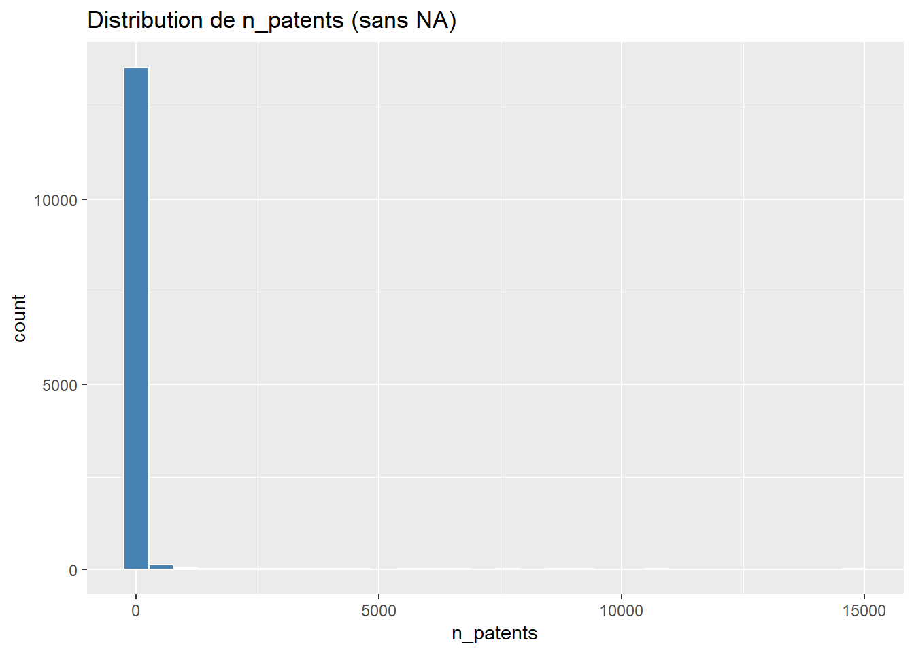
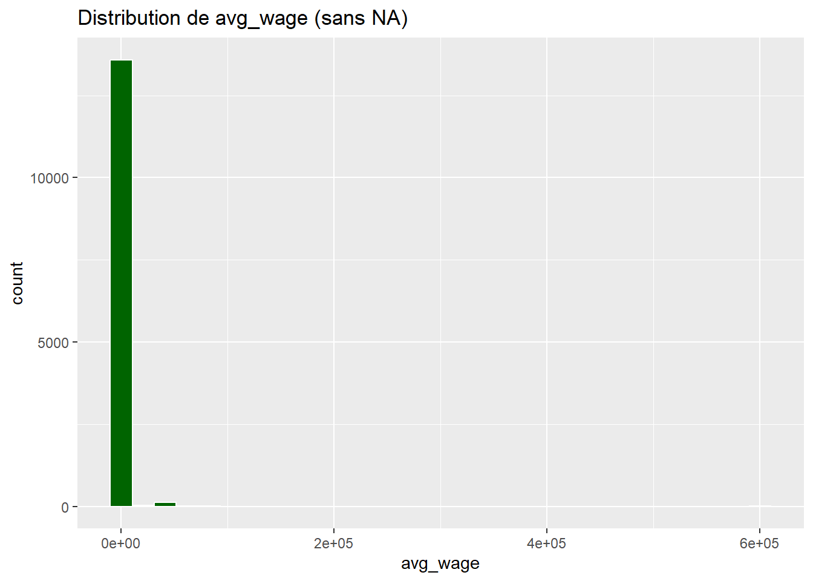
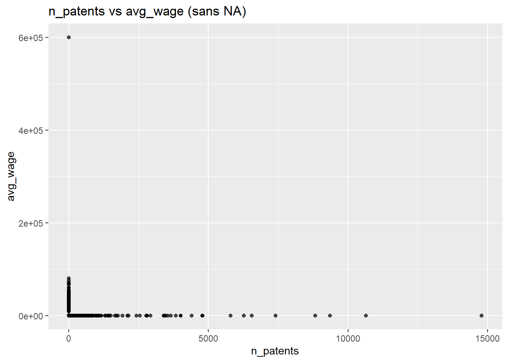
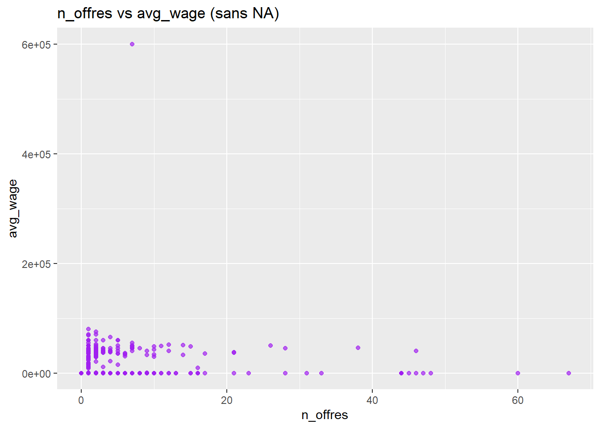
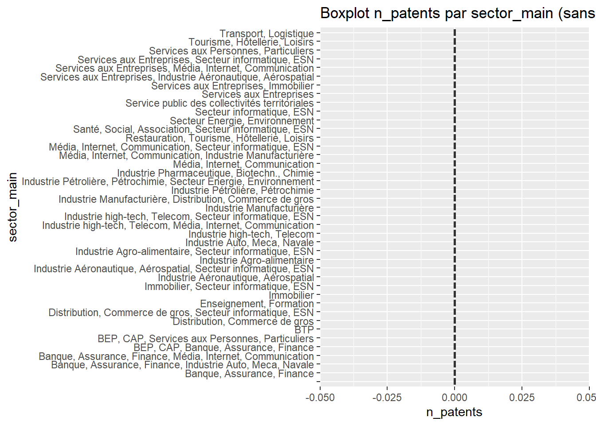
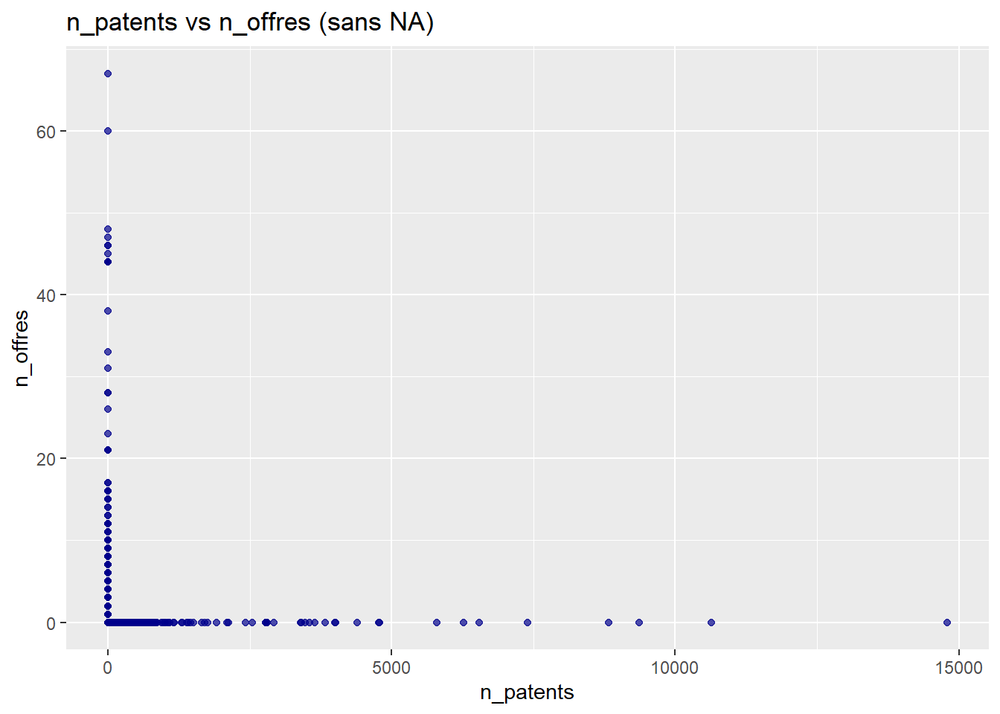
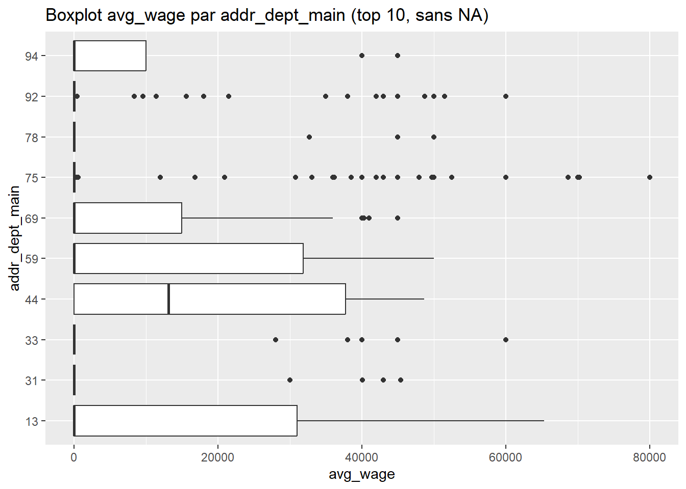

Analyse des Données - Analyses Multiples
- Analyses
Multiples
- 1. Statistiques
descriptives sur
n_patents(sans NA) - 2. Statistiques
descriptives sur
avg_wage(sans NA) - 3. Histogramme de
n_patents(sans NA) - 4. Histogramme de
avg_wage(sans NA) - 5. Nuage de
points
n_patentsvsavg_wage(sans NA) - 6. Nuage de points
n_offresvsavg_wage(sans NA) - 7. Boxplot de
n_patentsparsector_main(sans NA) - 8. Boxplot de
avg_wageparsector_main(sans NA) - 9. Top 10 Firmes par
n_patents(sans NA) - 10. Top 10 Firmes par
avg_wage(sans NA) - 11.
Matrice de corrélation entre
n_patents,n_offres,avg_wage(sans NA) - 12. Régression
linéaire:
n_patents~avg_wage(sans NA) - 13. Régression
linéaire:
n_offres~n_patents(sans NA) - 14. Fréquence des
addr_dept_main(sans NA) - 15.
Barplot des top 10
ipc_main_descpar fréquence (sans NA) - 16. Histogramme de
n_offres(sans NA) - 17. Nuage de
points
n_patentsvsn_offres(sans NA) - 18.
Boxplot
avg_wageparaddr_dept_main(sans NA, top 10 départements) - 19. Top
5
addr_dept_mainpar salaire moyenavg_wage(sans NA) - 20. Top 5
ipc_main_descparn_patentsmoyen (sans NA)
- 1. Statistiques
descriptives sur
Analyses Multiples
Dans cette section, nous présentons au moins 20 analyses différentes
sur la base de données base_emp_inno.
Note : Pour chaque analyse, les lignes contenant des
valeurs manquantes (NA) dans les variables utilisées sont
exclues avant de réaliser le calcul.
1. Statistiques descriptives sur n_patents (sans
NA)
| Min | Median | Mean | Max | SD |
|---|---|---|---|---|
| 0 | 4 | 26.15293 | 14788 | 265.6242 |
2. Statistiques descriptives sur avg_wage (sans
NA)
| Min | Median | Mean | Max | SD |
|---|---|---|---|---|
| 0 | 0 | 532.0385 | 6e+05 | 6862.386 |
3. Histogramme de n_patents (sans NA)

4. Histogramme de avg_wage (sans NA)

5. Nuage de points n_patents vs avg_wage
(sans NA)

6. Nuage de points n_offres vs avg_wage
(sans NA)

7. Boxplot de n_patents par sector_main
(sans NA)

8. Boxplot de avg_wage par sector_main
(sans NA)

9. Top 10 Firmes par n_patents (sans NA)
| firm_name | n_patents | avg_wage | n_offres |
|---|---|---|---|
| commissariatlnergieatomiqueetauxnergiesalternatives | 14788 | 0 | 0 |
| alcatellucent | 10640 | 0 | 0 |
| centrenationaldelarecherchescientifique | 9361 | 0 | 0 |
| thomsonlicensing | 8824 | 0 | 0 |
| centrenationaldelarecherchescientifiquecnrs | 7401 | 0 | 0 |
| compagniegnraledesetablissementsmichelin | 6547 | 0 | 0 |
| renaultsas | 6264 | 0 | 0 |
| thales | 5791 | 0 | 0 |
| loral | 4788 | 0 | 0 |
| arkemafrance | 4779 | 0 | 0 |
10. Top 10 Firmes par avg_wage (sans NA)
| firm_name | avg_wage | n_patents | n_offres |
|---|---|---|---|
| LA RELÈVE | 600000.00 | 0 | 7 |
| LITY | 80000.00 | 0 | 1 |
| DANEM PEOPLE FRANCE | 75000.00 | 0 | 2 |
| OCDE | 70263.84 | 0 | 2 |
| ADONE CONSEIL | 70000.00 | 0 | 1 |
| CEB | 68664.00 | 0 | 1 |
| NODYA GROUP | 65333.33 | 0 | 4 |
| ADAPT RH | 60000.00 | 0 | 1 |
| KAINO | 60000.00 | 0 | 2 |
| PMU | 60000.00 | 0 | 3 |
11. Matrice de corrélation entre n_patents,
n_offres, avg_wage (sans NA)

12. Régression linéaire: n_patents ~
avg_wage (sans NA)
##
## Call:
## lm(formula = n_patents ~ avg_wage, data = .)
##
## Residuals:
## Min 1Q Median 3Q Max
## -26.3 -24.3 -22.3 -17.3 14761.7
##
## Coefficients:
## Estimate Std. Error t value
## (Intercept) 26.3101471 2.2719830 11.580
## avg_wage -0.0002955 0.0003301 -0.895
## Pr(>|t|)
## (Intercept) <2e-16 ***
## avg_wage 0.371
## ---
## Signif. codes:
## 0 '***' 0.001 '**' 0.01 '*' 0.05 '.'
## 0.1 ' ' 1
##
## Residual standard error: 265.6 on 13749 degrees of freedom
## Multiple R-squared: 5.828e-05, Adjusted R-squared: -1.445e-05
## F-statistic: 0.8013 on 1 and 13749 DF, p-value: 0.370713. Régression linéaire: n_offres ~
n_patents (sans NA)
##
## Call:
## lm(formula = n_offres ~ n_patents, data = .)
##
## Residuals:
## Min 1Q Median 3Q Max
## -0.223 -0.222 -0.222 -0.222 66.777
##
## Coefficients:
## Estimate Std. Error t value
## (Intercept) 2.226e-01 1.756e-02 12.679
## n_patents -8.174e-05 6.579e-05 -1.242
## Pr(>|t|)
## (Intercept) <2e-16 ***
## n_patents 0.214
## ---
## Signif. codes:
## 0 '***' 0.001 '**' 0.01 '*' 0.05 '.'
## 0.1 ' ' 1
##
## Residual standard error: 2.049 on 13749 degrees of freedom
## Multiple R-squared: 0.0001123, Adjusted R-squared: 3.953e-05
## F-statistic: 1.544 on 1 and 13749 DF, p-value: 0.214114. Fréquence des addr_dept_main (sans NA)
| addr_dept_main | n |
|---|---|
| 75 | 233 |
| 92 | 109 |
| 59 | 48 |
| 69 | 31 |
| 44 | 24 |
| 31 | 23 |
| 33 | 22 |
| 78 | 16 |
| 94 | 16 |
| 13 | 13 |
15. Barplot des top 10 ipc_main_desc par fréquence
(sans NA)

16. Histogramme de n_offres (sans NA)

17. Nuage de points n_patents vs n_offres
(sans NA)

18. Boxplot avg_wage par addr_dept_main
(sans NA, top 10 départements)

19. Top 5 addr_dept_main par salaire moyen
avg_wage (sans NA)
| addr_dept_main | mean_wage |
|---|---|
| 21 | 43333.33 |
| 15 | 29768.86 |
| 6 | 23295.91 |
| 72 | 19375.00 |
| 67 | 18965.91 |
20. Top 5 ipc_main_desc par n_patents
moyen (sans NA)
| ipc_main_desc | mean_patents |
|---|---|
| LIQUEFACTION, SOLIDIFICATION, OR SEPARATION OF GASES OR GASEOUS MIXTURES BY PRESSURE AND COLD TREATMENT (cryogenic pumps F04B0037080000; gas storage vessels, gas-holders F17; filling vessels with, or discharging from vessels, compressed, liquefied, or solidified gases F17C; refrigeration machines, plants, or systems F25B) | 1274.5000 |
| CONJOINT CONTROL OF VEHICLE SUB-UNITS OF DIFFERENT TYPE OR DIFFERENT FUNCTION; CONTROL SYSTEMS SPECIALLY ADAPTED FOR HYBRID VEHICLES; ROAD VEHICLE DRIVE CONTROL SYSTEMS FOR PURPOSES NOT RELATED TO THE CONTROL OF A PARTICULAR SUB-UNIT | 538.4167 |
| NON-POSITIVE-DISPLACEMENT MACHINES OR ENGINES, e.g. STEAM TURBINES (combustion engines F02; machines or engines for liquids F03, F04; non-positive-displacement pumps F04D) | 498.2000 |
| VEHICLE TYRES (manufacture, repairing B29); TYRE INFLATION; TYRE CHANGING; CONNECTING VALVES TO INFLATABLE ELASTIC BODIES IN GENERAL; DEVICES OR ARRANGEMENTS RELATED TO TYRES (testing of tyres G01M0017020000) | 456.4118 |
| JET-PROPULSION PLANTS (arrangement or mounting of jet-propulsion plants in land vehicles or vehicles in general B60K; arrangement or mounting of jet-propulsion plants in waterborne vessels B63H; controlling aircraft attitude, flight direction, or altitude by jet reaction B64C; arrangement or mounting of jet-propulsion plants in aircraft B64D; plants characterised by the power of the working fluid being divided between jet propulsion and another form of propulsion, e.g. propeller, F02B, F02C; features of jet-propulsion plants common to gas-turbine plants, air intakes or fuel supply control of air-breathing jet-propulsion plants F02C) | 288.0000 |
Ces analyses montrent différentes relations, distributions et résumés statistiques, tout en excluant les valeurs manquantes afin de garantir que chaque analyse est basée sur des données complètes. Vous pouvez personnaliser davantage ces analyses selon vos besoins.